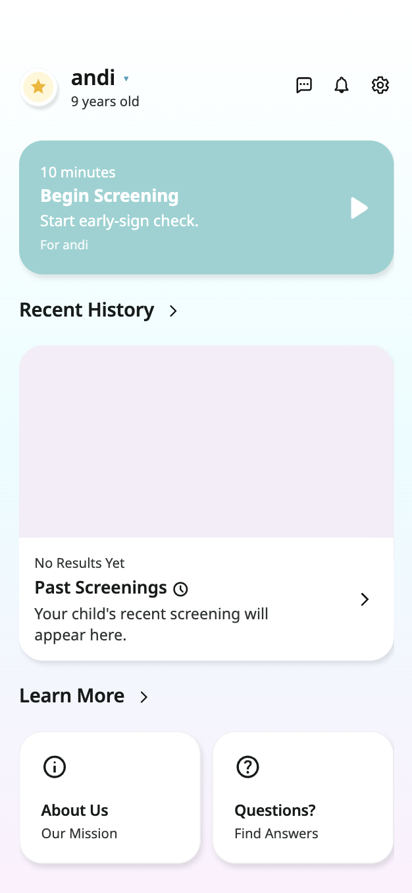
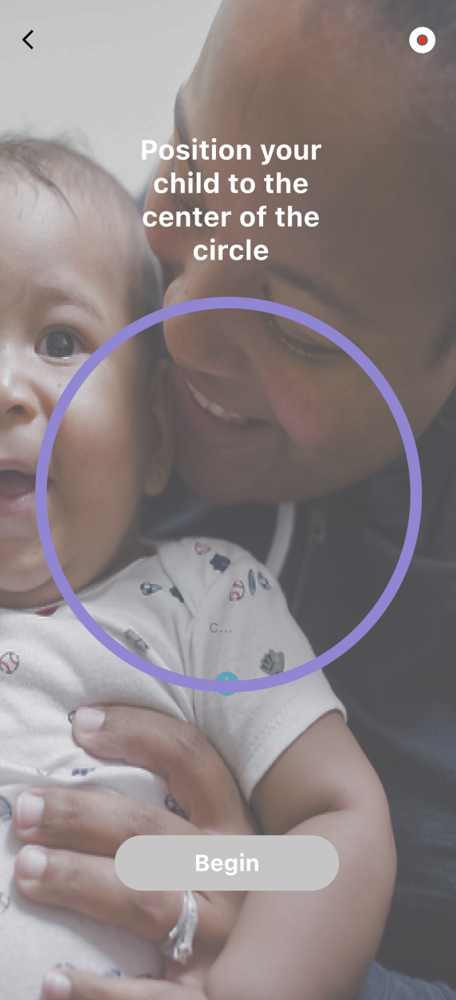
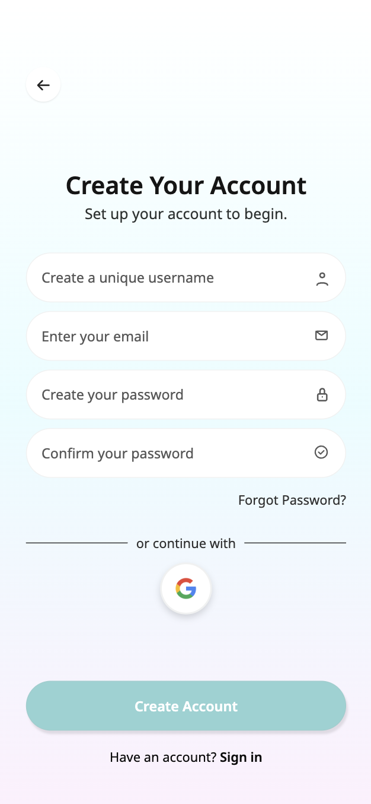

Owlet Mobile Neurological Screening Platform


I own the product and UX framing for Owlet—from problem definition through flows for users.
A walkthrough of the full experience — from first-time setup to longitudinal tracking.
A · Screening Experience
The primary differentiator. Caregivers are guided through a standardized screening session at home using their phone camera. The UX prioritizes calm, minimal prompting while the system captures behavioral and physiological signal.


Troubleshooting flow — guides caregivers through camera and positioning issues without losing the session.
B · Account & Onboarding
Kept intentionally lightweight. Onboarding is secondary to the screening experience, so friction here was minimized.



Account creation flow end-to-end.
C · Child Profile Management
A bottom sheet pattern that handles multi-child families cleanly — surfacing the right profile before a session without navigating to a separate settings page.

Child switching flow.
D · Results & Longitudinal Tracking
Makes the product feel clinically persistent — not a one-time demo but an ongoing tool. Results are stored, reviewable, and paired with notifications that prompt action without alarming tone.

Saved screening history and longitudinal tracking flow.
E · Settings & Support
Kept brief — focused on device permissions, notification preferences, and support access relevant to the screening context.
Settings and support flow.
Depth of thinking matters more than a roadmap checklist—these tensions shaped the direction of the product.
Explicit tradeoffs recruiters and hiring managers look for—documented here the same way as on my shipped work.
Roadmap framed as product risk reduction—not a generic todo list.